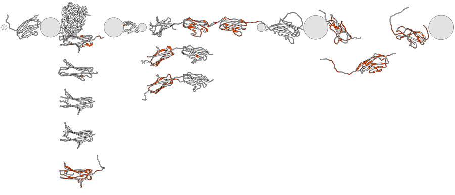

The command mda (for MultiDomain Assembler) performs several steps toward modeling a multidomain protein:
|  |
Performance depends on the number of structures imported into Chimera, which can be very large especially for runs with low filtering (permissive BLAST score and percent ID cutoffs, little or no winnowing) on queries with many known structures. Repeated uses of mda will reuse any open models that still meet the criteria and close any others. The command can be aborted during structure import by clicking the red stop icon in the status line to cancel the foreground task.
The center of rotation method is set to independent so that models rotate about their individual centers rather than a single collective center. The initial layout including scale and model orientations is saved as a position named stacked. Positions can be restored from the Rapid Access interface or with the command reset (e.g., reset stacked). Another position named overlay, better suited to the modeling step, is also saved.
On first use, mda also generates three database files (MDA_seqs.db, MDA_blast.db and MDA_uniprot.db) to speed up subsequent uses of the command, but these are not human-readable. These are placed in the user's Chimera download directory, in an MDA subdirectory.
Multidomain Assembler (MDA) generates models of large multidomain proteins. Hertig S, Goddard TD, Johnson GT, Ferrin TE. Biophys J. 2015 May 5;108(9):2097-102.Examples:
mda Q14896 ~/Desktop/MDA percentId 50 showAlignment false coloring blastscore skip 3CX2A smaller example (as of September 2016, imports six structures):
mda Q14896 ~/Desktop/MDA limit 1,20; reset overlay
mda p45379 ~/Desktop/MDA percent 60 group false color blast
Option keywords can be truncated to unique strings and their case does not matter. A vertical bar “|” designates mutually exclusive options, and default values are indicated with bold. Synonyms for true: True, 1. Synonyms for false: False, 0.
winnow max-per-region
Use the BLAST option to winnow the results to no more than max-per-region hits per region, as described in Berman et al., J Comput Biol. 7:293 (2000). Lower values correspond to more aggressive winnowing and fewer hits returned. All other filters (options below) are applied after winnowing. If the option is not specified or set to zero, no winnowing is done.
minScore score
Keep only BLAST hits with scores of at least score (default 50). The BLOSUM62 scoring matrix is used. Lowering the cutoff may increase structural coverage of the query, but low-scoring hits may be poorly aligned with the query sequence.
percentId percent
Keep only BLAST hits with percent sequence identity (%ID) of at least percent. %ID is based only on the region of hit-query alignment from BLAST. If the option is not specified, no filtering by %ID is done.
includeNative true | false
Whether to keep all hits (PDB entries) that are annotated by the PDB with the same UniProt ID as the query, regardless of minScore and percentIdThreshold settings.
suppressDoubles true | false
Whether to keep only the highest-scoring hit to a given PDB entry. An entire PDB structure will be imported if any part is kept as a hit, but redundant chains will be hidden and its position in the mda layout will be based on that match to the query. If suppressDoubles is true (default), a PDB entry will not be imported more than once. If false, it is possible for the same PDB entry to be imported more than once and laid out in different places corresponding to different matches along the query. Regardless of this setting, however, only the PDB chain with the most structure residues will be kept as a hit when BLAST finds multiple identical chains from the same PDB entry. The default (true) is recommended for initial assessment of the available structures, whereas false may provide better structural coverage for modeling proteins with repeated domains.
forceBlast true | false
Whether to re-run BLAST instead of using any previously cached results. Even if this option is false, previously cached results will only be used when the query (the uniprotID) and winnowing level are the same as in an earlier use of mda. Whenever mda runs BLAST, the new results will be added to the cache, and if there were earlier results for the same query and winnowing level, they will be overwritten. Using cached results will speed mda execution at the possible cost of missing any newer PDB entries added to the sequence database since the time of caching.
group true | false
Whether to simplify the display when multiple hits cover similar parts of the query. Hits are grouped into sets in which each member overlaps another by at least 25 residues in the alignment according to BLAST, but extends less than 25 residues beyond the alignment region of the member with the longest such region. If this option is true, the members of a set will be superimposed, only the representative structure (that with the longest region of alignment) will be shown, and their models will be grouped in the Model Panel. If this option is false (default), the models in a set will still be laid out in the same “column,” but vertically separated from one another, and they will not be grouped in the Model Panel.
hideSubmodels true | false
Whether to hide submodels except for the first of any multi-model PDB entries, namely NMR ensembles.
hideAltChain true | false
Whether to hide additional chains of a PDB entry that are identical to (same molecular entity as) the BLAST hit chain.
hideComplex true | false
Whether to hide nearby chains that are nonidentical to the BLAST hit. When shown (default), these other chains are colored blue to distinguish them from the hit chains; see coloring. Regardless of this option, however, only ribbons are shown, and thus small molecules without ribbon representations are not displayed. Atoms/bonds can be displayed with the menu and/or commands, for example: display ligand
deleteHidden true | false
Whether to delete submodels or chains hidden by the three preceding options. Deleting hidden parts improves current performance, but can make a subsequent run with some of the same hits slower, as those with deleted parts must be reimported.
coloring scheme
Coloring allows a quick visual assessment of the query-aligned parts of hit structures, match quality, and potentially interesting binding partners or insertions. The ribbon-coloring scheme can be one of the following:
- mutations (default) - residues identical to those in the query sequence shown in gray (RGB 0.66, 0.66, 0.66), residues that differ from the query red, unaligned parts transparent gray (RGBA 0.66, 0.66, 0.66, 0.2), chains other than the hit chain blue
- percentid - aligned residues a single color per chain, ranging from gray for the highest %ID to red for the lowest %ID (note the highest and lowest values might not be very far apart), unaligned residues in the same chain the same color but transparent, other chains blue
- blastscore - aligned residues a single color per chain, ranging from gray for the highest BLAST score to red for the lowest BLAST score (note the highest and lowest values might not be very far apart), unaligned residues in the same chain the same color but transparent, other chains blue
In addition, three attributes are assigned to residues in the hit structures to allow custom coloring. The first two are quantitative, suitable for showing with Render by Attribute or the rangecolor command:Although the third has numerical values, it is a classification rather than a continuously varying quantity:
- mda_blastscore - BLAST score, with the same value assigned to all residues in the same model as the BLAST hit
- mda_percentid - %ID of BLAST hit, with the same value assigned to all residues in the same model as the hit
Residues in each class above can be specified directly in commands, e.g.: color yellow :/mda_alignment=1
- mda_alignment, with values:
- 1 - in the BLAST-aligned region, same amino acid as as the target
- 2 - in the BLAST-aligned region, different amino acid than the target
- 3 - in the hit chain but not in the BLAST-aligned region
- 4 - in a co-complexed chain (a different chain than the hit)
noConfirm true | false
Whether to simply import the hit structures (no matter how many) rather than asking the user for permission when more than ten are found.
showAlignment true | false
Whether to open Multalign Viewer and the Modeller interface. Not opening these dialogs allows faster execution, so false is recommended when just the initial layout of structures is desired, not the sequence alignment or subsequent homology modeling (which requires the sequence alignment).
limit min-per-residue[,min-extension]
Limit the number of hits to a specified coverage depth. All hits are considered in order from highest to lowest %ID. A hit is kept if it covers at least min-extension consecutive residues (default 20) where each residue is covered by fewer than min-per-residue already accepted (higher-identity) hits. With this option, a more complete coverage of the target sequence with structural templates can usually be achieved than with the BLAST-provided winnow option, which has not been optimized for template search. Exclusions by limit can be overridden with keepPDB.
keepPDB pdb1[,pdb2,...]
Retain hits with the specified PDB IDs regardless of any limit settings. This option is useful when a specific PDB structure is desired as a template for homology modeling.
skipPDB pdb1[,pdb2,...]
Omit hits with the specified PDB IDs. This option is useful when a specific PDB structure should be excluded from the templates for homology modeling. Note that models can also be omitted from the templates using the Modeller interface.
excludeSelected true | false
Whether to omit models with any part currently selected from the hits in the next mda run.
{kind=link}